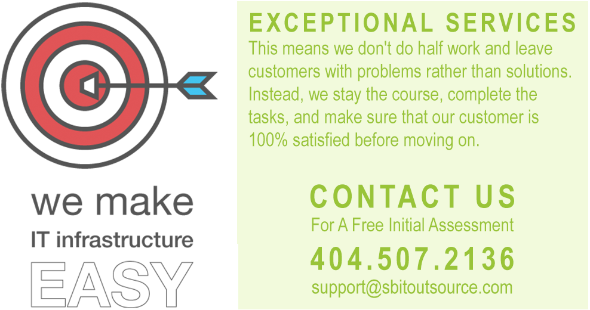

We are a company that was established for the sole purpose of assisting small businesses that typically don’t have a dedicated IT person or IT department.
Every time we visit a small business, we find them struggling with simple things like installing or configuring a new printer. So we decided to be the IT person and the IT department for these businesses. We provided them with high quality professional services at reasonable cost and is 100% satisfaction guaranteed to spare them all that headache.
We will setup all the technologies that their business needs professionally and provide them all the support they need 24/7. Even if the customer has an IT staff member, and that case we gap, augment, and help keep the infrastructure fully operational.
Small Business IT Outsource is your trusted solution to your IT woes. We work with small businesses all over the Atlanta area to ensure they get the maximum benefit of working with us. We know small businesses and the technologies that is required to successfully run a business.
If your business is looking for IT Services, IT Consulting, Network Support, Data Backup or other computer consulting services in Atlanta, give Small Business IT Outsourcea call today! Our team of professionals understand computer repairs and ensure your company has the needed resources allocated so that you are not down for days, but minutes.
We pride ourselves on quick response times as well as highest quality computer engineers and software developers. We would love to chat with you about your company technology needs to findout how we can help.
